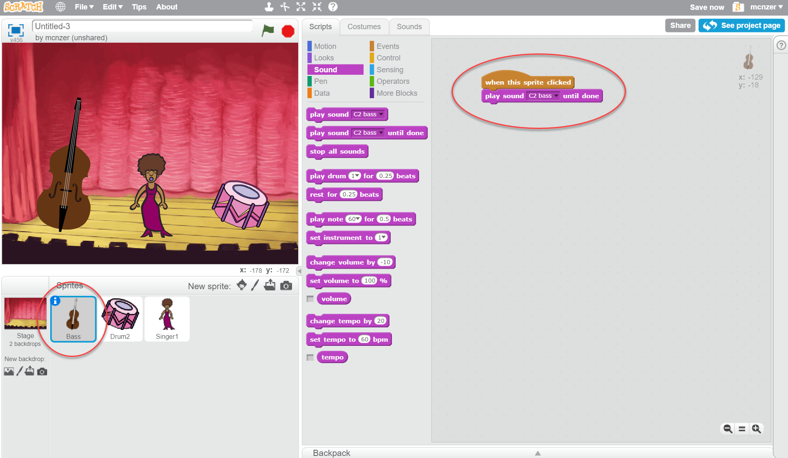

Band Practise - Scratch
- 1. Open new project on https://scratch.mit.edu/
- 2. Change backdrop to Stage1
- 3. Delete the cat sprite by right clicking
- 4. Choose 3 new sprites (instruments)
- 5. Click on first sprite

- 6. Make this code block
- 7. Click on next sprite and make the same code block but change the sound
- 8. Do the same for the next one
- 9. Name the project BandPractise
- 10. MAKE SURE YOU SAVE YOUR PROJECT!! (file/save now)
- 11. Enjoy!! :) üç¶üçüüíô